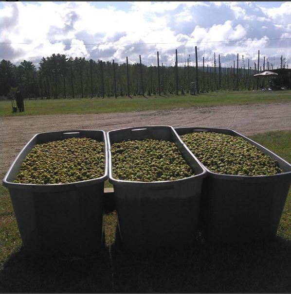
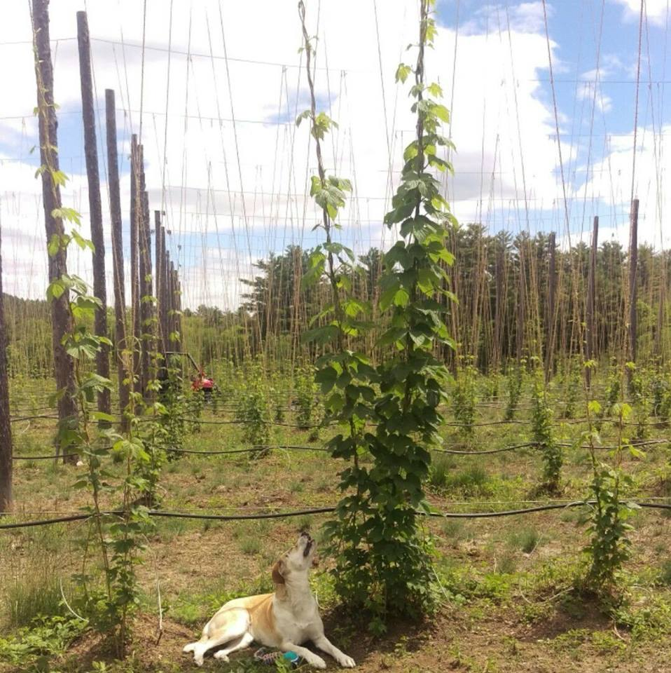
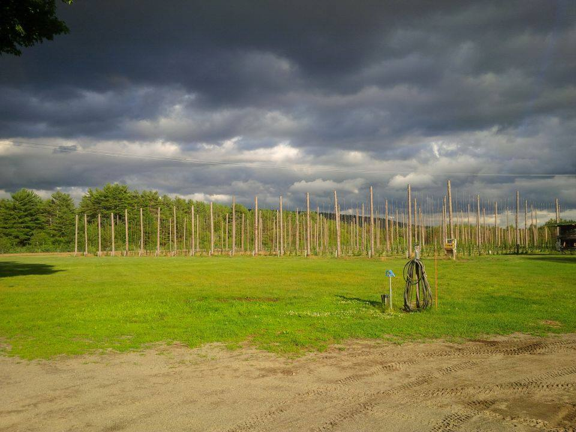

Owl Valley Hops
Here on our two acre hop yard we grow both Chinook and Cascade hops. To harvest our hops we use our harvester which we manufactured right here on site. Once harvested we sell our hops to local breweries to be brewed into a variety of tasty pints.


